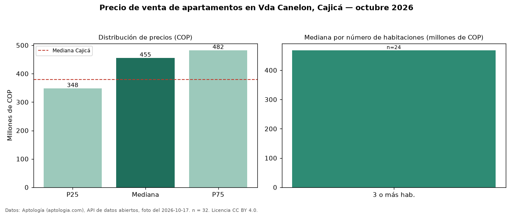

Precio de venta de apartamentos en Vda Canelon, Cajicá — octubre 2026
COP 455 millones es el precio mediano de apartamentos en venta en Vda Canelon, Cajicá (n = 32 avisos). Eso la ubica 20 % por encima de la mediana de Cajicá para apartamentos (COP 380 millones). Por mediana, es el puesto 2 de 10 barrios de Cajicá con al menos 30 avisos de apartamentos en venta: entre los más caros. El segmento con más oferta es el de 3 o más habitaciones (24 avisos, mediana COP 468 millones). 100 % de los avisos incluye parqueadero. El aviso más barato pide COP 295 millones y el más caro COP 535 millones. La mitad central de los avisos va de COP 348 millones a COP 482 millones (razón 1,4), una dispersión baja. Datos: Aptología (aptologia.com), API de datos abiertos, licencia CC BY 4.0 — https://www.aptologia.com/venta/cajica/vda-canelon. Archivos: PDF de 2 páginas, CSV con las cifras y gráfica PNG.

| Avisos únicos | 32 |
|---|---|
| Percentil 25 | COP 348.009.976 |
| Mediana | COP 455.000.000 |
| Percentil 75 | COP 482.250.000 |
Fuente: avisos vigentes de portales inmobiliarios recopilados por Aptología, deduplicados (mínimo 30 avisos únicos por celda). Precios pedidos, no cerrados. Fecha: 2026-10-18.